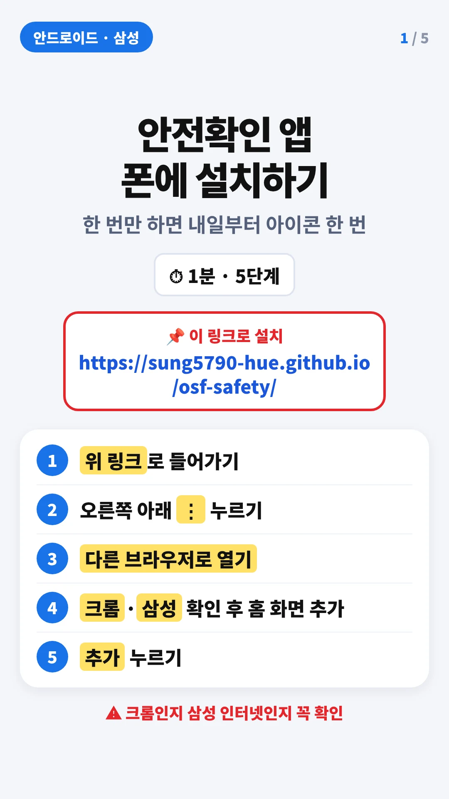
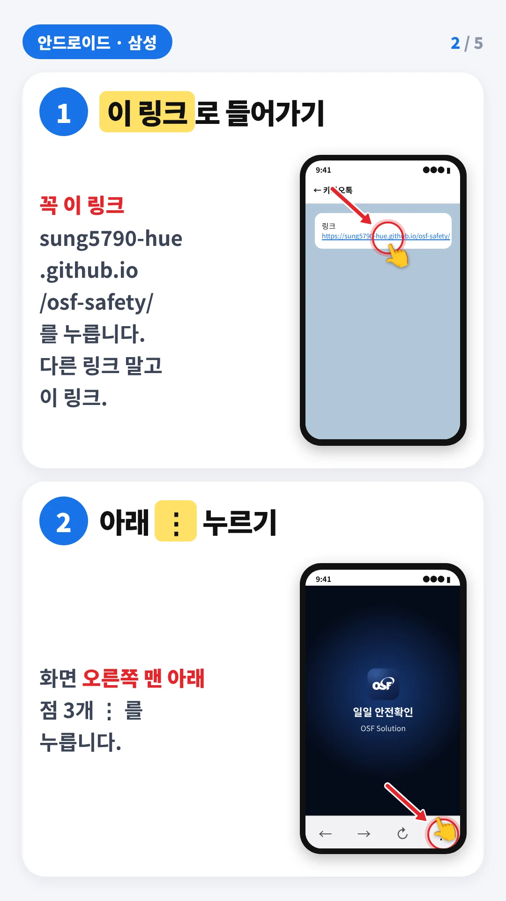
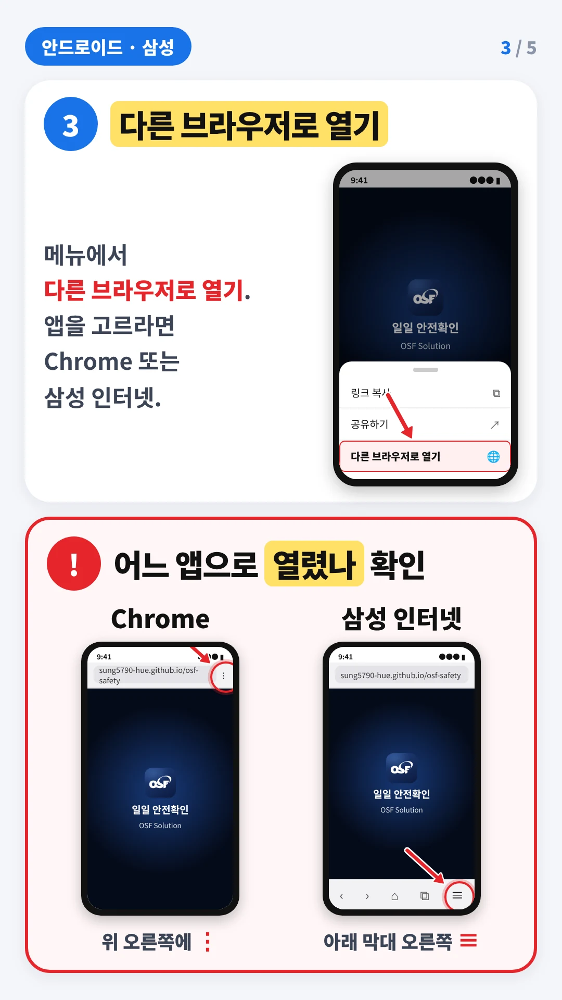
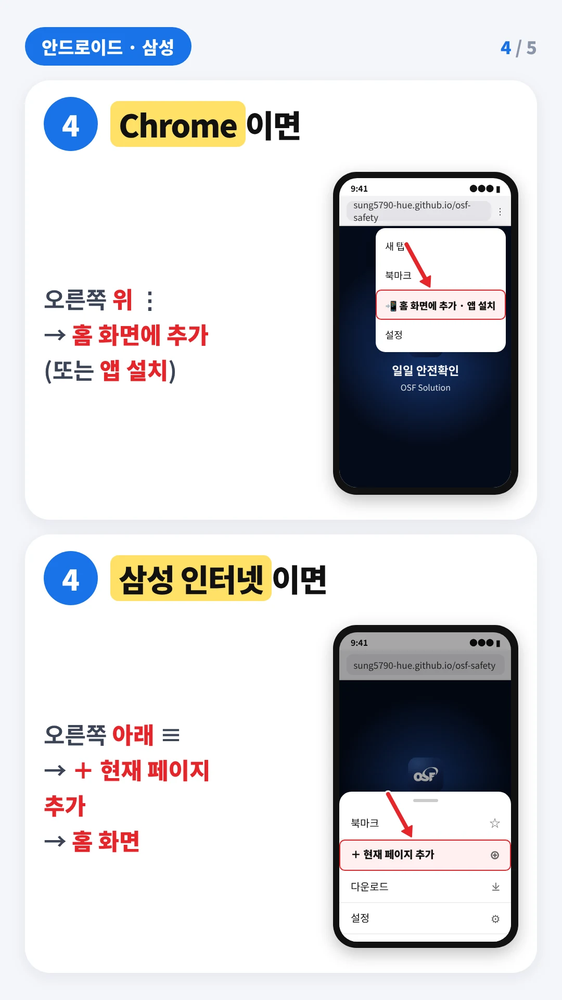
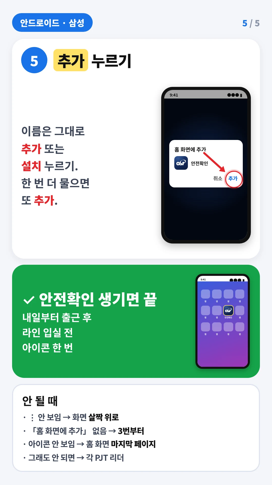
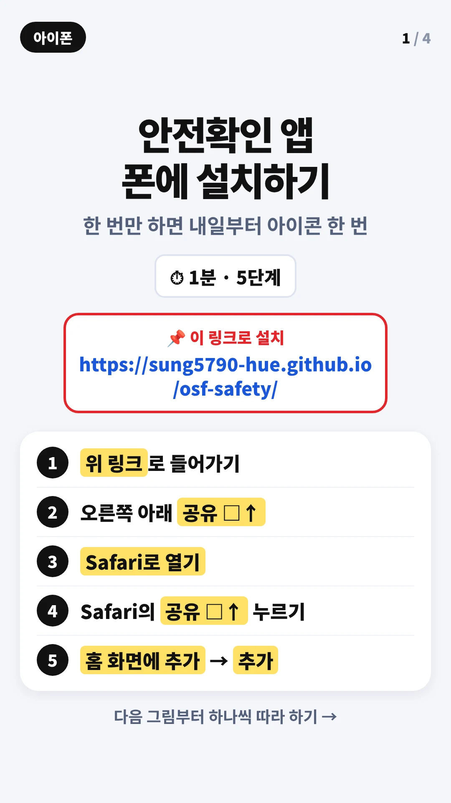
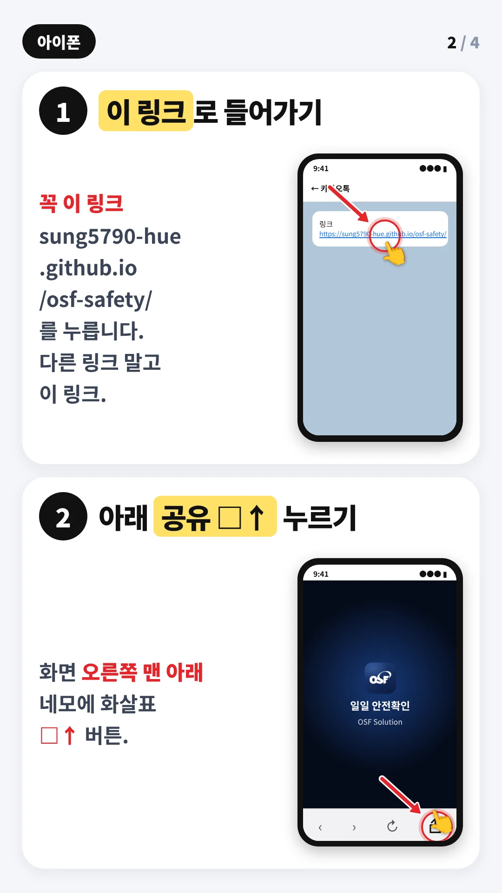
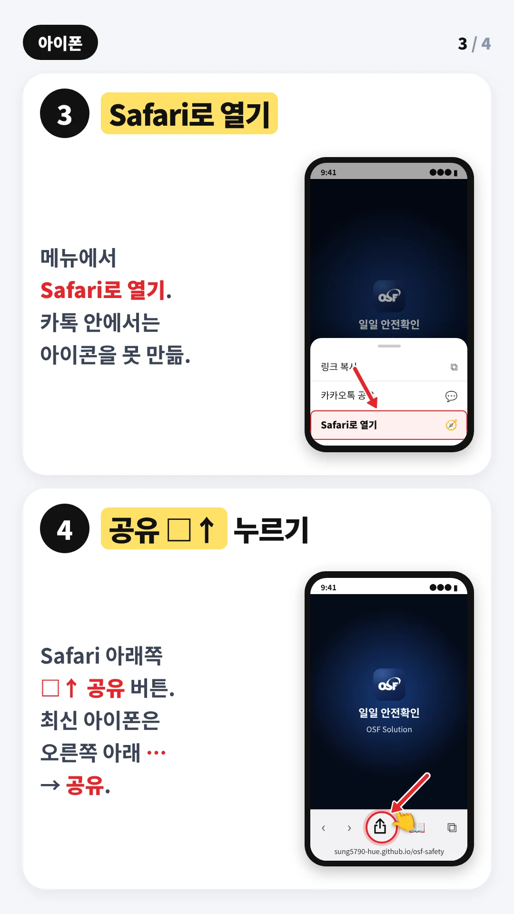
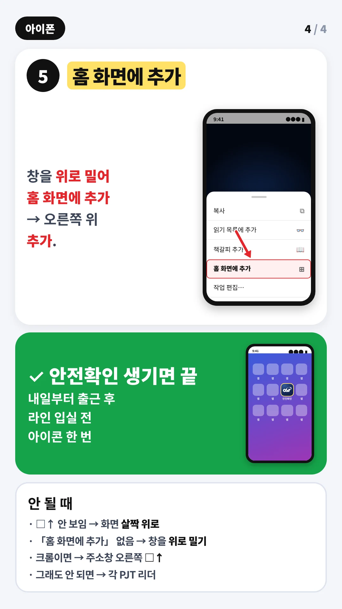

설치 링크 열기
https://sung5790-hue.github.io/osf-safety/
⚠ 크롬으로 열렸는지 삼성 인터넷으로 열렸는지 꼭 확인
크롬은 위 오른쪽 ⋮, 삼성 인터넷은 아래 오른쪽 ≡









설치가 안 되면 각 PJT 리더에게 말씀해 주세요.
설치를 못 했어도 위 설치 링크를 누르면 오늘 안전확인은 바로 할 수 있습니다.